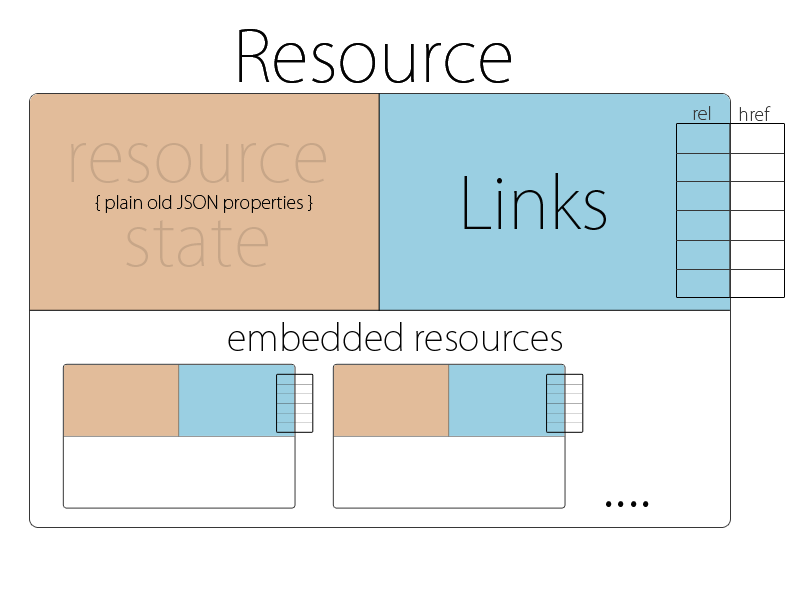

HATEOAS
WILMA - Brand Solutions

Introduction
[H]ypermedia [a]s [t]he [E]ngine [o]f [A]pplication [S]tate
Standard/Specification on how servers and clients interact

Introduction
- client interacts with server entirely through hypermedia
- hypermedia is dynamically generated at server side
- client needs no prior knowledge on how to interact with server
- no contract like SOA
Motivation
Initial user feedback
- Which are the possible state transitions (from current state)?
- Duplicated logic on server and client side
- How to sort, filter, paginate?
- Where is the picture of article?
Benefits
- Discoverability
- Consistency
- Ecosystem
- Self documented API
Disadvantages
- Complexity
- Learning curve
- Won't replace proper documentation
Evaluation
Known hypermedia specifications:
- JSON API
- Siren
- HAL
- Collections+JSON
- JSON-LD
JSON API
Purpose:
- minimize requests and data transfered
- speed up API development
- built by the community
- future-proof
- avoid bike shedding
Last update: 2015-05-29
Extendable
Example:
Get a specific order
GET /orders/1 HTTP/1.1
Accept: application/vnd.api+json
Document structure
{
"data": null,
"errors": null,
"meta": null,
"links": null,
"included": null,
"jsonapi": null
}
Data structure
{
"data": {
"id": "1",
"type": "order",
"links": {
"self": "/orders/1"
},
"attributes": "...",
"relationships": "..."
}// ...
}
Data structure: Attributes
{
"data": {
"id": "1",
"type": "order",
"links": "...",
"attributes": {
"order-id": "1",
"order-number": "1010101010",
"shipment-number": "1012121212",
"status": "approved"
},
"relationships": "..."
}// ...
}
Data structure: relationships
{
"data": {
"id": "1",
"type": "order",
"links": "..."
},
"attributes": "...",
"relationships": {
"order-items": {
"data": [
{"id": 1, "type": "order-item"},
{"id": 2, "type": "order-item"}
],
"links": {
"related": "/orders/1/items"
}
}
}
}
Meta structure
{
"data": {
"id": "1",
"type": "order",
"links": "...",
"attributes": "...",
"relationships": "..."
},
"meta": {
"order-items-count": 2,
"order-lines-count": 3,
"full-order-price": "1000"
}
}
Siren
Siren is a hypermedia specification for representing entities.
Last update: 2015-10-21
Entity consits of:
- class definition
- title
- properties
- (sub)entities
- links
- actions
Example:
Get a specific order
GET /orders/1 HTTP/1.1
Response: application/vnd.siren+json
Class
Define entitiy's purpose.
{
"class": [ "order" ],
"title": "",
"properties": {},
"entities": [],
"links": [],
"actions": []
}
Title
Descriptive text about the entity.
{
"class": [],
"title": "An order entity which represents the top level order.",
"properties": {},
"entities": [],
"links": [],
"actions": []
}
Properties
A set of key-value pairs describing the state of the entity.
{
"class": [],
"title": "",
"properties": {
"order-id": "1",
"order-number": "1010101010",
"shipment-number": "1012121212"
},
"entities": [],
"links": [],
"actions": []
}
Entities
A collection of related sub entities. Important part is the relation between the parent and a child entity.
{
"class": [],
"title": "",
"properties": {},
"entities": [
{
"class": [ "items", "collection" ],
"rel": [ "/rels/order-items" ],
"href": "/orders/1/items"
}
],
"links": [],
"actions": []
}
Links
Non-entity based relation bound to the entity.
{
"class": [],
"title": "",
"properties": {},
"entities": [],
"links": [
{
"rel": [ "self" ],
"href": "/orders/1/"
}
],
"actions": []
}
Actions
A collection of actions that can change the state of the entity.
{
"class": [],
"title": "",
"properties": {},
"entities": [],
"links": [],
"actions": [
{
"name": "update-order-status",
"title": "Update an order status",
"method": "POST",
"href": "/orders/1",
"type": "application/json",
"fields": [
{ "name": "status", "type": "radio", "value": "approved" }
]
}
]
}
HAL
Hypertext Application Language
Last update: 2013-09-18
Example:
Get a specific order
GET /orders/1 HTTP/1.1
Accept: application/hal+json
Links
{
"_links": {
"self": { "href": "/orders/1" }
},
"_embedded": {},
"order-id": "1",
"order-number": "1010101010",
"shipment-number": "1012121212"
}
Resources
{
"_links": {},
"_embedded": {
"items": [{
"_links": { "self": { "href": "/orders/1/items/1"}},
"order_item_id": "1"
}]
},
"order-id": "1",
"order-number": "1010101010",
"shipment-number": "1012121212"
}
PAGINATION
JSON API
{
"meta": {
"count": 3
},
"data": [
{
"type": "order",
"id": "1",
"attributes": {
"order-number": "1010121312379",
"shipment-number": "1010123123",
"status": "approved"
}
},
{
"type": "order",
"id": "2",
"attributes": {
"order-number": "1010121312380",
"shipment-number": "1010123124",
"status": "approved"
}
},
{
"type": "order",
"id": "3",
"attributes": {
"order-number": "1010121312381",
"shipment-number": "1010123123",
"status": "initial"
}
}
],
"links": {
"self": "/orders?page[cursor]=XYZ0",
"first": "/orders?page[cursor]=XYZ0",
"prev": null,
"next": "/orders?page[cursor]=XYZ1",
"last": "/orders?page[cursor]=XYZN"
}
}
SIREN
{
"class": [ "orders", "collection" ],
"title": "A list of orders",
"properties": {},
"entities": [],
"links": [
{ "rel": [ "self" ], "href": "/orders/1/" },
{ "rel": [ "first" ], "href": "/orders?page[cursor]=XYZ0" },
{ "rel": [ "next" ], "href": "/orders?page[cursor]=XYZ1" },
{ "rel": [ "last" ], "href": "/orders?page[cursor]=XYZN" },
],
"actions": []
}
HAL
{
"_links": {
"self": { "href": "/orders/1/" },
"first": { "href": "/orders?page[cursor]=XYZ0" },
"next": { "href": "/orders?page[cursor]=XYZ1" },
"last": { "href": "/orders?page[cursor]=XYZN" },
},
"_embedded": []
}
SORTING
Sorting is not directly a part of HATEOAS.
Best practice:
GET /orders?sort=-created_at,status HTTP/1.1
FILTERING
Filtering is not directly a part of HATEOAS.
Best practice:
GET /orders?status=initial HTTP/1.1
Conclusion
Team decision / Open discussion